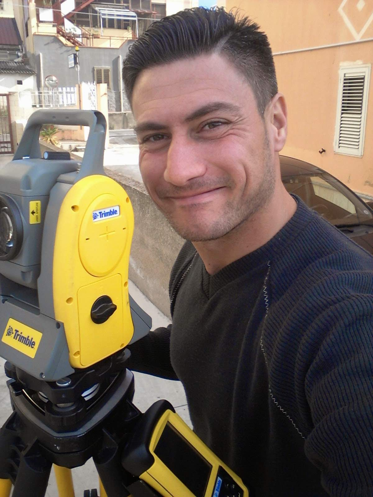

Marcantonio Polimeni
Lo studio tecnico viene aperto nel 2005 svolgendo l’attività di geometra specializzandomi nella settore catastale, svolgendo rilievi di particolare complessità nel 2022 mi laureo in ingegneria civile e Ambientale
Lo studio si occupa delle seguenti attività:

Studio tecnico MP
Via Riviera 54, Villa San Giovanni 89018
Informazioni utili
Via riviera 54 Villa San Giovanni
polimeni.marcantonio@gmail.com
Tel. +39 345 621 0575
Studio tecnico MP di Marcantonio Polimeni
2024 by Francesco Careri